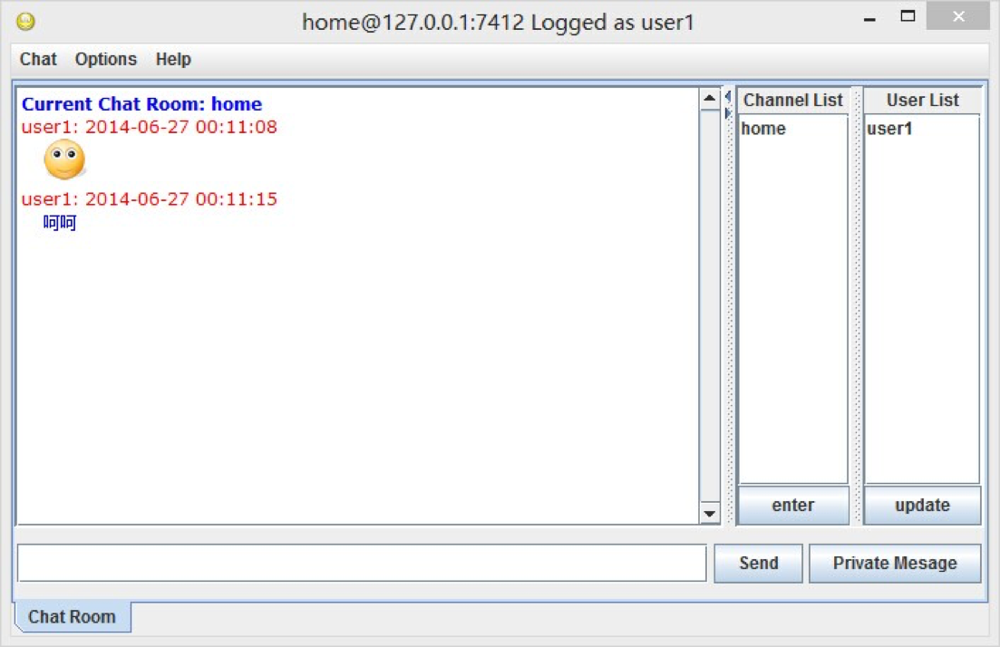
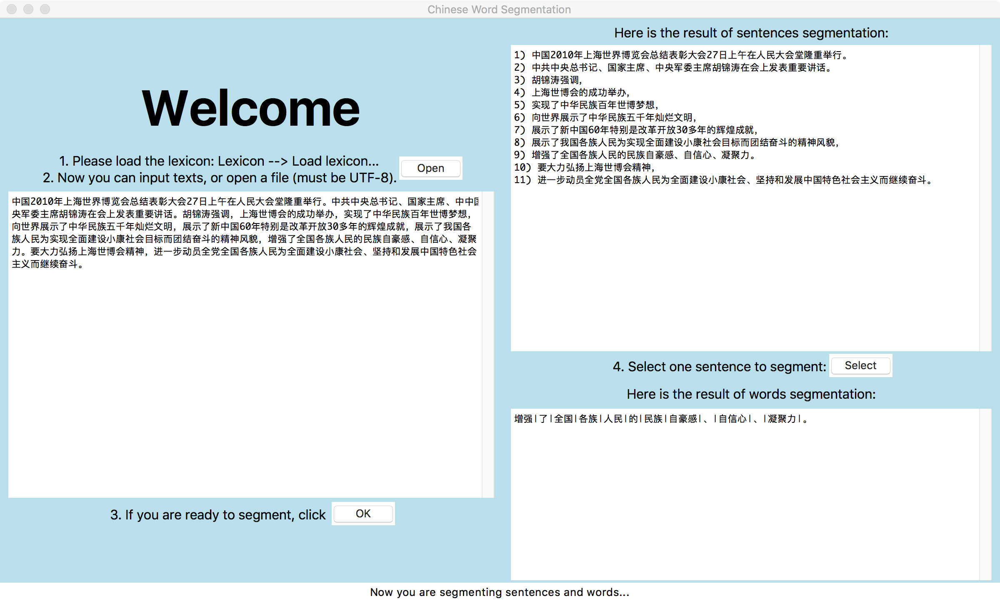

Binbin Li
Binbin Li
Hello! I am a MSE student in the Computer Science and Engineering at University of Michigan. I am always curious about the unknown areas and able to absorb new knowledge and skills actively and quickly. I have done lots of front-end projects such as IOS app, Android app and web services. In the meantime, I also spent 2 years on the research of Machine Learning and took the most relevant courses. Currently I'm looking for a summer internship in software development or the application of data science.
Education
-
University of Michigan - Ann Arbor
Sept. 2015 - Apr. 2017M.S.E in Computer Science and Engineering Grade: 3.83/4.0
-
Shanghai Jiao Tong University
Sept. 2011 - June 2015B.E. in School of Electronic, Information and Electrical Engineering
IEEE Honor Class(Composed of 97 students selected from 759 students in the school)
Major: Electronics & Electric Engineering
Primary area: Computer Science & Technology
Grade: 3.60/4.3
Related Course
-
Taking Course at UM
Parallel Computing(EECS 587), Advanced Compiler(EECS 583)
Taken Course at UM
Information Retrieval(EECS 549/SI 650), Algorithms(EECS 586), Continuous Optimum Methods(IOE 511/MATH 562), Database Management System(EECS 484), Machine Learning(EECS 545), Introduction to AI(EECS 492)
Taken Course at SJTU
Computer Networks, Software Engineering, Computer Systems, Computer Organization, Advanced Algorithms, Data Mining Techniques
Research Experience
-
Center for Brain-like Computing & Machine Intelligence
Apr. 2013 - June 2015Supervisor: Professor Bao-Liang Lu
- Worked on transfer learning framework for emotion recognition to classify unlabeled EEG data.
- Assisted in implementing a multi-model method to enhance emotion recognition accuracy by combining eye movement and EEG signals.
- Sorted and edited movie clips used as stimuli, collected experimental data and processed the data.
- Developed an algorithm that uses a gradient method to detect the facial contour and features within a 2.5D video captured by Microsoft Kinect.
-
Research Program on Databse
Aug. 2012 - Aug. 2013Supervisor: Associate Professor Bin Yao
- Developed an IOS app for medical management.
- Implemented part of a program for dynamic monitoring of optimal locations in road network databases, I adopted Dijkstra algorithm to find the nearest point for each node dynamically.
- Worked with 4 team members to compare the performance of 5 different data structure servers, I focused on processing data stored as RDF using a data server, Redis.
Publication
Yi-Fei Lu, Wei-Long Zheng, Bin-Bin Li, Bao-Liang Lu. Combining Eye Movements and EEG to Enhance Emotion Recognition [paper] IJCAI 2015
Honors & Awards
-
Feb. 2014
Meritorious Winner in Interdisciplinary Contest In Modeling[paper]
Extracurricular Activities
-
Shanghai Jiao Tong University Library Student Management Committee
- Vice-President
June 2013 - June2014
Maintained the homepage of the committee and planned the physical activities in the committee. - Vice-Minister
June 2012 - June 2013
Organized the volunteer work in the library and planned the donations of books.
Shanghai Jiao Tong University Loving Homes
- Founder and Officer in Book Recycling Department
Apr. 2012 - Apr. 2013
- Participated in setting up the department.
- Organized volunteer work and recycled, sorted and delivered used books.
- Vice-President
June 2013 - June2014
-
Word Embedding Algorithms
Nov. 2015 - Dec. 2015Implemented Word2Vec model which is based on a 3-layer neural network.
Conducted the experiment on a 100 MB of the English Wikipedia corpus and compared the word analogy with that of GloVe model.
Analyzed the similarity between GloVe and Word2Vec based on statistics of word co-occurrence
-
Patient Management System for Hospital (IOS App)
Oct. 2014 - Nov. 2014Designed the prototype of UI and implemented the interface with the server.
-
PP Liner(Java Program for Computer Networks)
Oct. 2013 - Jan. 2014Worked with 4 members.
Designed UI and added a monitor observing the flow of access to prevent attacking.
 -
Computer-Go Player(C++ Program for AI)
Feb. 2013 - June. 2013Worked as team leader with 4 members.
Implemented the core function to decide next step by adopting Monte Carlo method with α - β pruning, bit manipulation and parallel computing.
-
Timeline(Android App for Software Engineering)
Sept. 2012 - Jan. 2013Worked as team leader with 5 members.
Developed an Android app which can help plan schedules and evaluate them based on the efficiency, completion status and benefit to the health.
-
Search Engine(Python Program for Introduction to Information )
Feb. 2012 - Apr. 2012Implemented a crawler based on BFS and multithreading.
Implemented a seach engine based on Lucene and Chinese word segmentation.
-
Intelligent Vehicle in Software Mode and Hardware-in-the-Loop(HIL) Mode
Feb. 2012 - June 2012Worked as team leader with 3 members.
Developed Labview algorithms for electromagnetic and photoelectricity guided intelligent vehicles.
Tested algorithms in both software mode(CyberSmart) and Hardware-in-the-Loop(HIL) mode.
-
Joint Laboratory of NAO Robot
July 2012 - Oct. 2012Developed a program that enabled the NAO robot to perform a customized dance and climb stairs.
-
Chinese Word Segmentation(Python Program)
Oct. 2011 - Dec. 2011Worked as team leader with 4 members.
Implemented the function of segmentation of Chinese words based on a dictionary with word frequency and designed UI.
